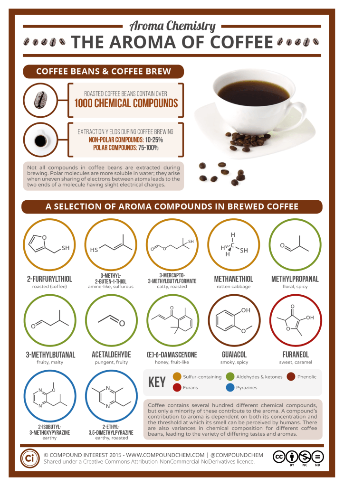

Coffee
Armoa Compounds:
- (E)- ß- Damascenone ( honey-like fruity )
- 2 – Furfurylthiol ( Roasted coffee )
- 3 – Mecapto – 3 – methylbutyformate ( Catty, roasty )
- 3 – Methyl – 2 – buten – 1 – thiol ( amine )
- 2 – Isobutyl -3-methoxypyrazine ( earthy )
- 5 – Ethyl – 4 – hydroxy – 2 – methyl – 3(2H)- furanone Guaiacol ( phenolic, spicy )
- 2,3- Butanedione diacetyl ( buttery )
- 4-Vinylguaiacol ( spicy )
- 2,3-Pentanedione ( buttery )
- Methional ( potato like, sweet )
- 2-Isopropyl-3-methoxypyrazine ( earthy, roasty )
- Vanillin ( vanilla )
- 4-Hydroxy-2,5-dimethyl- 3(2H)-furanone(Furaneol) ( caramel )
- 2-Ethyl-3,5-dimethylpyrazine( earthy, roasty )
- 2,3-Diethyl-5-methylpyrazine ( seasoning – like )
- 3-Hydroxy-4,5-dimethyl- 2(5H)-furanone(Sotolon) ( seasoning – like )
- 4-Ethylguaiacol ( spicy )
- 5-Ethyl-3-hydroxy-4-methyl- 2(5H)-furanone (Abhexon) (seasoning like )
Fragrance family : Gourmand
Gourmand is a "comfy" and delicious aroma, gourmand is a relatively new category
Botanical name: Coffea
Extracting coffee essence or chemically known as “Caffeol” DIY
- roast your coffee beans
- fill pot with olive oil till the beans are covered, place on low heat
- stir mixture every hour
- with till the beans has darken even more then remove from heat
- extract over a sift and then over a cheese cloth into a glass jar
Another method that is done more professionally using mechanical expelling
- Roast coffee beans at 238 degree for 10 minutes
- Dilute roasted coffee beans in dichloromethane,Which will be directly injected
- To analyze the fatty acid content of the oil, the solution will be treated BF3-Methanol to get rid of excess fat, after the separation of the solution.
- The roasted coffee oil will be snt through a tube to be cooled and then heated to allow strong aroma's of the coffee to shine
Main note: 2 - Furfurylthiol
Chemical Sturture is Aromatic